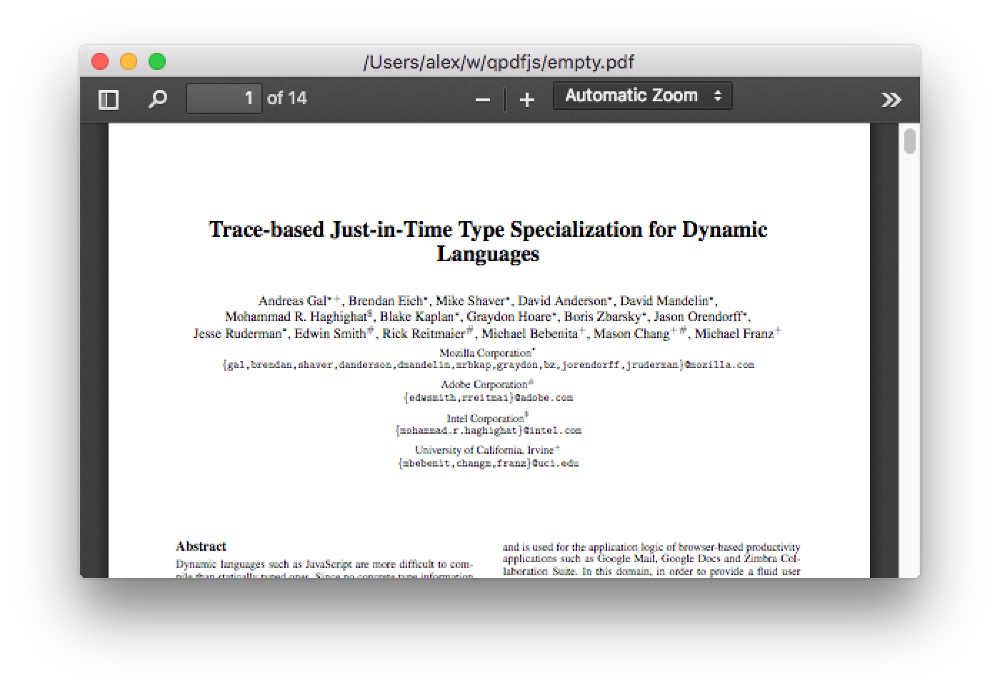
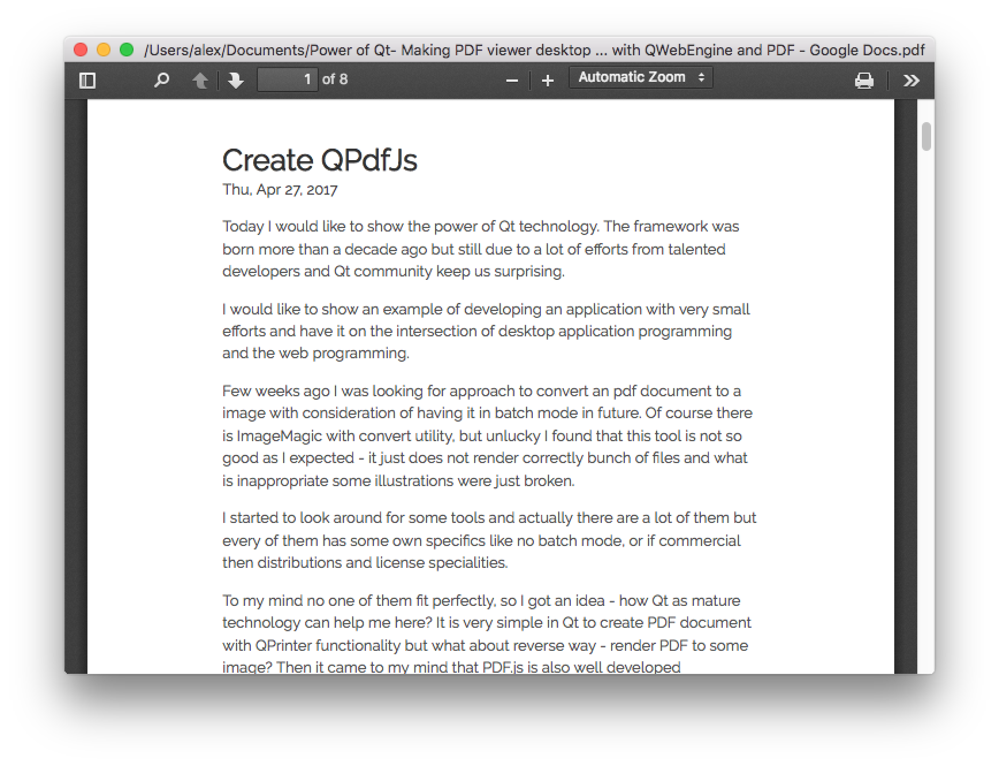

Today I would like to show the power of Qt technology. The framework was born more than a decade ago but still due to a lot of efforts from talented developers and Qt community keep us surprising.
I would like to show an example of developing an application with very small efforts and have it on the intersection of desktop application programming and the web programming.
Few weeks ago I was looking for approach to convert an pdf document to a image with consideration of having it in batch mode in future. Of course there is ImageMagic with convert utility, but unlucky I found that this tool is not so good as I expected - it just does not render correctly bunch of files and what is inappropriate some illustrations were just broken.
I started to look around for some tools and actually there are a lot of them but every of them has some own specifics like no batch mode, or if commercial then distributions and license specialities.
To my mind no one of them fit perfectly, so I got an idea - how Qt as mature technology can help me here? It is very simple in Qt to create PDF document with QPrinter functionality but what about reverse way - render PDF to some image? Then it came to my mind that PDF.js is also well developed technology that allows to do PDF rendering.
Can we make these two technologies to meet? Actually yes! Qt has component called QWebEngineView. Let´s demonstration how to code this:
Based on the QMainWindow class:
m_webView = new QWebEngineView(this);
m_webView->load(url);
setCentralWidget(m_webView);
This will present a window that contains a webpage inside. Now let´s have a look at PDF.js. The project is quite large and presents a heavy footprint, but there is an option to build a minfied version that can easily be included into other websites. Here is how we retrieved and built it:
$ git clone git://github.com/mozilla/pdf.js.git
$ cd pdf.js
$ brew install npm
$ npm install -g gulp-cli
$ npm install
$ gulp minified
The result is a “compiled” version of pdf.js in the folder build/minified, then we copy it to our project folder. Now set the url to point to the local file minified/web/viewer.html
auto url = QUrl::fromLocalFile(app_path+"/minified/web/viewer.html");
Now build & run:

This worked perfectly right out of the box, so my concept is valid, however it is showing their example PDF file, how does it bypass the filename and inject our own into the javascript engine? There is another clever bit of Qt technology called QWebChannel. The idea is that on C++/Qt side we instantiate QWebChannel object and set this channel to a webpage. With that channel we can register objects that can be accessed from a JavaScript scope:
auto url = QUrl::fromLocalFile(app_path+"/minified/web/viewer.html");
m_communicator = new Communicator(this);
m_communicator->setUrl(pdf_path);
m_webView = new QWebEngineView(this);
QWebChannel * channel = new QWebChannel(this);
channel->registerObject(QStringLiteral("communicator"), m_communicator);
m_webView->page()->setWebChannel(channel);
m_webView->load(url);
setCentralWidget(m_webView);
The above code allows us to access the communicator object from JavaScript. Now we need to make some changes to viewer.html/viewer.js and add qwebchannel.js to allow communication on other side, but that is simple enough:
- For viewer.html just add a reference to qwebchannel.js
- For viewer.js add the initialization of QWebChannel and bypass the filename just below the definition of the original url pointing to that example pdf file:
Code:
var DEFAULT_URL = 'compressed.tracemonkey-pldi-09.pdf';
new QWebChannel(qt.webChannelTransport
,function(channel) {
var comm = channel.objects.communicator;
DEFAULT_URL = comm.url;
...
Here is the secret sauce in how this all works. Before page loading, we attach a web channel and register the communicator object. Then when viewer.html is loaded for the first time, we have a defined QWebChannel JS class. Just after the declaration of DEFAULT_URL we create JS QWebChannel and once it is instantiated and communication is established, an attached function is called which reads the url from communicator object. This url is used instead of the example pdf file.
When the PDF.js code changes are done, just rebuild the minified version:
$ gulp minified
Now we copy the minified to our project home. From here we can make changes like allowing the application to accept command line arguments, or profile a list of available PDF files that you want to process, whatever it is you need.

And there you have it, a completed PDF viewer desktop application just in few hours (not counting research).
Project github: https://github.com/yshurik/qpdfjs
PS: And this post is my first attempt to create a site based on Hugo+GitHubPages. Pretty impressive!